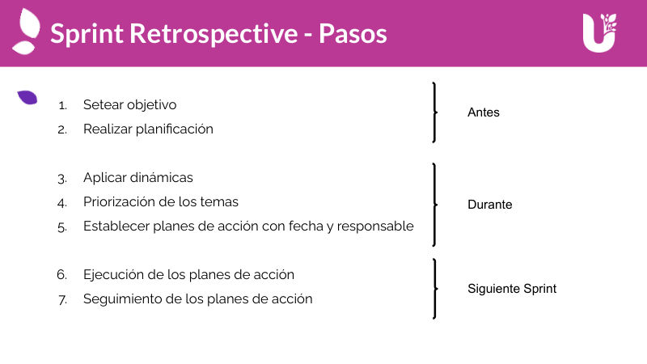
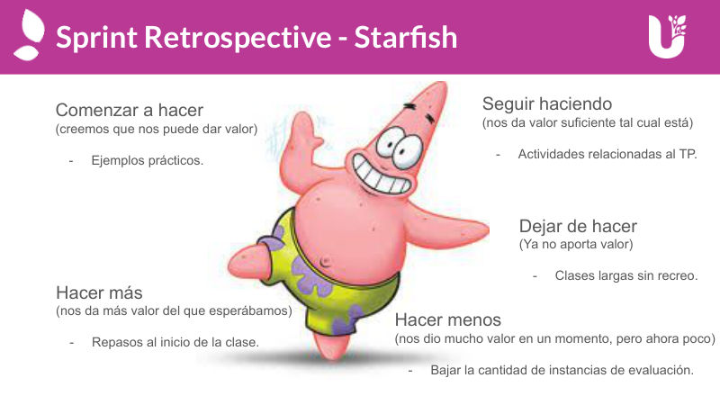
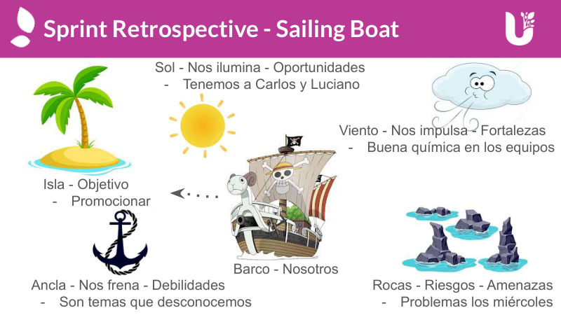
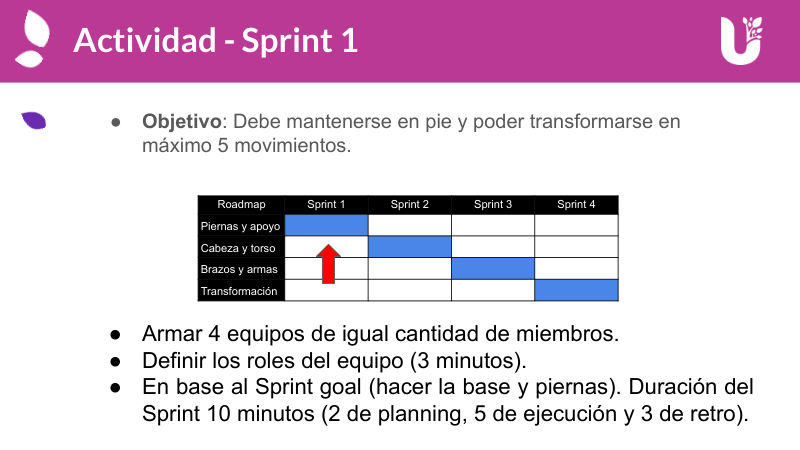

Clase 11 · 21/10/2026 · Parcial del 18/11
Cerrar el Sprint: Daily, Review y Retrospectiva
Cómo se controla el avance todos los días, cómo se muestra lo hecho y cómo el equipo mejora su forma de trabajar.
Viene de la Clase 10 (Sprint, Planning, DoR, slicing) y de la Clase 5: Sailing Boat es un FODA con dibujos.
Alimenta Lean y XP y Kanban (la mejora continua aparece en los tres) y el parcial del 18/11.
Antes de empezar · repaso de Clase 10
Sin mirar: duración del Sprint y del Sprint 0, para qué sirve la DoR, y la diferencia entre slicing y splitting.
Sprint de 2 semanas a 2 meses, fijo; Sprint 0 de hasta 2 Sprints. La DoR dice si una historia puede entrar al Sprint. Slicing parte historias (refinamiento); splitting parte una historia en tareas (planning). Es el mismo repaso que hace la cátedra (Scrum parte 3, p3 y p4). Repasar en la Clase 10.
Numeración. El PDF se titula «Clase 6: Scrum Parte 3». En el cronograma es la clase 11 (21/10): «retrospectiva, actividad integradora».
El problema
Ya hay un Sprint planificado. Quedan tres preguntas: ¿vamos bien hoy? (Daily), ¿lo que hicimos sirve? (Review) y ¿cómo trabajamos mejor la próxima vez? (Retrospectiva). En cascada, esas preguntas se hacen en los hitos de fase, a veces meses después. En Scrum se hacen todos los días y en cada Sprint.
Idea 1 · Daily Scrum: 15 minutos para detectar desvíos
La cátedra la llama de tres formas: Daily Scrum, Stand Up o Meeting. Es la misma reunión.
- Dura 15 minutos. Se comentan los impedimentos y se acuerda cómo resolverlos.
- Es la única ceremonia que se repite dentro del Sprint: las otras tres ocurren una vez (Kanban, Lean y XP, p3, repaso).
- Permite identificar desvíos rápido si las tareas duran como máximo 8 horas: si una tarea de 8 horas sigue abierta al día siguiente, algo pasa.
- Se hace todos los días, a la misma hora (Scrum parte 2, p18).
- Cada miembro responde tres preguntas: ¿qué hice ayer?, ¿qué voy a hacer hoy?, ¿tengo algún impedimento? (Scrum parte 3, p7).
Ejemplo (web de reservas de restaurantes). «Ayer terminé el selector de día y hora. Hoy hago la consulta de mesas libres. Impedimento: el servicio de correo rechaza los envíos desde ayer.» El impedimento se comenta en la Daily, pero no se resuelve ahí: se pide ayuda y se trata por fuera de la reunión, como dice el repaso de la cátedra. Por eso alcanzan 15 minutos.
No es un reporte al jefe. Las tres preguntas sirven para que el equipo detecte desvíos e impedimentos, no para rendir cuentas. Eliminar impedimentos es justamente una de las tareas del Scrum Master (Clase 9).
Complemento. La Guía 2020 sacó las tres preguntas y deja el formato libre. Para el parcial, la respuesta es la de la cátedra: las tres preguntas.
Idea 2 · Sprint Review: mostrar el incremento
Tiene dos partes (Scrum parte 3, p8):
- Se revisa el incremento de valor del Sprint: el PO explica a los stakeholders qué ítems alcanzaron la DoD, y luego uno o varios miembros del equipo hacen una demostración en el producto.
- Se acuerdan los próximos pasos: se identifican cambios al backlog y se revisan presupuesto y roadmap del producto.
Dos detalles que se preguntan. En la primera parte hablan dos: el PO explica qué se terminó y el equipo hace la demostración. Y solo se muestra lo que alcanzó la DoD: una historia a medio hacer no se presenta. La segunda parte es la que conecta con el Manifiesto: el feedback de los stakeholders se convierte en cambios al backlog («respuesta ante el cambio»).
Review contra Retrospectiva
Las dos ocurren al final del Sprint y las dos revisan algo. La diferencia está en qué revisan:
| Sprint Review | Sprint Retrospective | |
|---|---|---|
| Qué se revisa | El producto: el incremento que cumple la DoD | La forma de trabajar del equipo |
| Con quién | Equipo, PO y stakeholders | El equipo |
| Qué sale | Cambios al backlog, presupuesto y roadmap revisados | Planes de acción con fecha y responsable |
| Orden | Antes de la retrospectiva | Última tarea del Sprint |
Idea 3 · Sprint Retrospective
El equipo se toma un tiempo para pensar cómo mejorar de cara al Sprint siguiente. Es la última tarea del Sprint (Scrum parte 3, p9). Tiene tres reglas:
| Regla (p9) | Mal | Bien |
|---|---|---|
| Debe tener un objetivo | «Hablemos de cómo fue el Sprint» | «Hoy queremos entender por qué no llegamos a probar dos historias» |
| Hablar de temas, no de personas | «Juan siempre entrega tarde» | «Las tareas de back-end llegan a pruebas el último día» |
| Priorizar el respeto | Ironías, culpas | Cada uno opina sin ser interrumpido |
Los siete pasos: antes, durante y en el Sprint siguiente

- Antes · 1. Setear objetivo · 2. Realizar planificación¿Qué queremos mejorar y con qué dinámica?
- Durante · 3. Aplicar dinámicas · 4. Priorizar temas · 5. Planes de acción con fecha y responsable¿Qué cambiamos, quién y para cuándo?
- Siguiente Sprint · 6. Ejecutar · 7. Seguir los planes de acción¿Lo hicimos? ¿Sirvió?
El paso que más se olvida es el 7. Una retro sin seguimiento repite las mismas quejas cada Sprint. Por eso el plan de acción lleva fecha y responsable, y por eso los planes de acción de la retro pueden entrar al Sprint Backlog siguiente (Clase 9).
Dónde cae cada paso. Solo tres de los siete ocurren durante la reunión (3, 4 y 5). El objetivo y la planificación (1 y 2) se preparan antes; ejecutar y seguir los planes (6 y 7) pasa en el Sprint siguiente. Las dinámicas del paso 3 son Starfish y Sailing Boat.
Idea 4 · Dinámica Starfish (estrella de mar)
Cinco brazos para clasificar las prácticas según el valor que dan hoy (Scrum parte 3, p11). La cátedra la ejemplificó con la propia materia:

Truco para no confundirlos. Hay dos parejas y uno solo: comenzar / dejar (algo que se empieza o se corta del todo), hacer más / hacer menos (algo que ya se hace y se ajusta) y seguir haciendo (no se toca).
Cómo lo resume la cátedra (repaso al empezar la clase 12): Starfish es un brainstorming para encontrar acciones de mejora rápidas, y su versión simplificada tiene tres brazos: start, stop, continue/keep. Sailing Boat, en cambio, es un FODA para ver cómo está el equipo frente a nuevos desafíos.
Ejemplo propio: la retro de un equipo de desarrollo
El equipo de la web de reservas cierra un Sprint en el que dos historias no llegaron a probarse. Para ubicar cada práctica, la pregunta es cuánto valor da hoy:
| Brazo | Definición de la cátedra | Práctica del equipo |
|---|---|---|
| Seguir haciendo | Nos da valor suficiente tal cual está | La demo al PO antes de la Review |
| Comenzar a hacer | Creemos que nos puede dar valor | Probar cada historia apenas se termina, no al final del Sprint |
| Dejar de hacer | Ya no aporta valor | Aceptar historias sin criterios de aceptación (no cumplen la DoR) |
| Hacer más | Nos da más valor del que esperábamos | Programar de a dos las historias difíciles: salieron sin defectos |
| Hacer menos | Nos dio mucho valor en un momento, pero ahora poco | Reuniones largas para temas que se resuelven por chat |
Después se priorizan los temas (paso 4) y se arma un plan de acción (paso 5): «Desde el próximo Sprint, cada historia se prueba el mismo día en que se termina. Responsable: quien hace las pruebas. Se revisa en la retro siguiente».
Hacer menos contra dejar de hacer. Es el par que más se confunde. Si la práctica todavía aporta algo, es «hacer menos». Si ya no aporta nada, es «dejar de hacer». Lo mismo del otro lado: «comenzar» es para algo que todavía no se hace; «hacer más», para algo que ya se hace y rindió más de lo esperado.
Idea 5 · Dinámica Sailing Boat (velero)
El barco es el equipo y navega hacia una isla (el objetivo). La cátedra rotula cada elemento con una palabra que ya conocemos (Scrum parte 3, p12):

La conexión que vale oro en el parcial. Sailing Boat es un FODA con un objetivo arriba: viento = Fortalezas, sol = Oportunidades, ancla = Debilidades, rocas = Amenazas (riesgos). En la Clase 5 el FODA servía para identificar riesgos del proyecto; acá sirve para que el equipo vea qué lo impulsa y qué lo frena antes de elegir planes de acción.
| Starfish | Sailing Boat | |
|---|---|---|
| Qué es (cátedra) | Un brainstorming | Un FODA |
| Para qué | Identificar acciones de mejora rápidas | Entender cómo está el equipo de cara a nuevos desafíos |
| Partes | 5 brazos (versión simple: start, stop, continue/keep) | Barco, isla, viento, sol, ancla, rocas |
| Mira hacia… | Las prácticas del equipo: qué cambiar ya | El objetivo: qué ayuda y qué frena para llegar |
Idea 6 · Actividad integradora: el robot Transformer
La clase cerró con una actividad: armar en equipos un robot parecido a un Transformer (Scrum parte 3, p13 a p17).

| Sprint | Objetivo (roadmap) | Giro de la consigna | Qué concepto muestra (lectura propia) |
|---|---|---|---|
| 1 | Piernas y apoyo | Armar 4 equipos iguales y definir roles en 3 minutos | Roles de Scrum y time box: 10 minutos fijos (2 de planning, 5 de ejecución y 3 de retro) |
| 2 | Cabeza y torso | Misma duración | Sprints de largo fijo; la retro del Sprint 1 ya se aplica |
| 3 | Brazos y armas | Un miembro rota al equipo de la derecha | Cambiar a la gente baja el rendimiento: el equipo pierde conocimiento y tiene que volver a coordinarse |
| 4 | Transformación | Vuelven los que rotaron. Los stakeholders quieren robots pacifistas: hay que quitar las armas | Cambio de requisitos aceptado: «responder ante el cambio sobre seguir un plan» (Manifiesto). En cascada sería un pedido de cambio formal |
Lectura propia. Las diapositivas solo dan la consigna; la columna «qué concepto muestra» es una interpretación. El objetivo «mantenerse en pie y transformarse en máximo 5 movimientos» funciona como un criterio de aceptación: se cumple o no se cumple.
Práctica 1 · Recuperar sin mirar
Sin volver arriba: las tres preguntas de la Daily y por qué conviene que las tareas duren como máximo 8 horas.
¿Qué hice ayer? ¿Qué voy a hacer hoy? ¿Tengo algún impedimento? Con tareas de hasta 8 horas, una tarea abierta dos días seguidos es un desvío visible al día siguiente.
Sin volver arriba: los siete pasos de la retrospectiva, agrupados en antes, durante y Sprint siguiente.
Antes: setear objetivo, planificar. Durante: aplicar dinámicas, priorizar temas, planes de acción con fecha y responsable. Siguiente Sprint: ejecutar y seguir los planes.
Sin volver arriba: los cinco brazos de Starfish y los seis elementos de Sailing Boat con su equivalente FODA.
Starfish: comenzar a hacer, seguir haciendo, dejar de hacer, hacer más, hacer menos. Sailing Boat: barco (equipo), isla (objetivo), viento (fortalezas), sol (oportunidades), ancla (debilidades), rocas (amenazas o riesgos).
Práctica 2 · Preguntas
¿Cuál es la última tarea del Sprint?
En la Sprint Review, ¿quién explica a los stakeholders qué ítems alcanzaron la DoD?
En una Sailing Boat, el equipo anota «la API de otra área se cae seguido». ¿Dónde va y qué es en un FODA?
«Hacemos dailies de 40 minutos y ya no aportan tanto como al principio.» ¿Qué brazo de Starfish es?
En la actividad del robot, en el Sprint 4 los stakeholders piden quitar las armas. ¿Qué idea ágil se practica?
Trampas de opción múltiple
| La opción tentadora | Por qué está mal |
|---|---|
| «En la Daily se resuelven los impedimentos» | Se comentan y se acuerda cómo resolverlos; se tratan por fuera de la reunión |
| «¿Qué voy a hacer mañana?» como pregunta de la Daily | Las tres son: qué hice ayer, qué voy a hacer hoy, si tengo algún impedimento |
| «La Daily dura 30 minutos» | 15 minutos, todos los días a la misma hora |
| «En la Review el Scrum Master presenta el Incremento» | El PO explica a los stakeholders lo que alcanzó la DoD y el equipo hace la demo |
| «La Review revisa cómo trabajó el equipo» | Eso es la Retrospectiva. La Review mira el producto y los próximos pasos |
| «La Review es la última tarea del Sprint» | La última es la Retrospectiva; la primera, la Planning |
| «En la retro se habla de quién falló» | Se habla de temas, no de personas; debe tener un objetivo y priorizar el respeto |
| «La retro termina cuando se arma el plan de acción» | Faltan los pasos 6 y 7: ejecutar y seguir los planes en el Sprint siguiente |
| «Starfish es un FODA» | Starfish es un brainstorming; el FODA es Sailing Boat |
| «El ancla son las amenazas» | Ancla = debilidades (internas). Las amenazas o riesgos son las rocas |
| «El sol son las fortalezas» | Sol = oportunidades. Las fortalezas son el viento, que impulsa |
Para repasar: glosario y hoja de repaso ágil (imprimible).